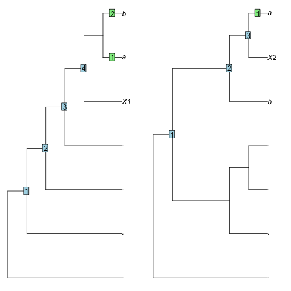

Functions to describe the position of a leaf relative to the root. "Stemmier" leaves ought to exhibit a smaller root-node distance and a larger sister size.
Usage
SisterSize(tree, tip)
# S3 method for class 'numeric'
SisterSize(tree, tip)
# S3 method for class 'character'
SisterSize(tree, tip)
RootNodeDistance(tree, tip)
# S3 method for class 'numeric'
RootNodeDistance(tree, tip)
# S3 method for class 'character'
RootNodeDistance(tree, tip)
RootNodeDist(tree, tip)Arguments
- tree
A tree of class
phylo.- tip
Either a numeric specifying the index of a single tip, or a character specifying its label.
Value
SisterSize() returns an integer specifying the number of leaves
in the clade that is sister to tip.
RootNodeDist() returns an integer specifying the number of nodes between
tip and the root node of tree.
Details
RootNodeDistance() calculates the number of nodes between the chosen leaf
and the root of tree.
This is an unsatisfactory measure, as the range of possible
distances is a function of the shape of the tree
(Asher and Smith 2022)
.
As an example, leaf X1 in the tree (.,(.,(.,(.,(X1,(a,b))))))
falls outside the clade (a, b) and has a root-node distance of 4,
whereas leaf X2 in the tree (.,((.,(.,.)),(b,(X2,a))))
falls within the clade (a, b), so should be considered more "crownwards",
yet has a smaller root-node distance (3).

SisterSize() measures the number of leaves in the clade that is sister to
the chosen leaf, as proposed by Asher and Smith (2022)
.
In the examples above, X1 has a sister size of 2 leaves, whereas X2,
which is "more crownwards", has a smaller sister size (1 leaf), as desired.
References
Asher R, Smith MR (2022). “Phylogenetic signal and bias in paleontology.” Systematic Biology, 71(4), 986–1008. doi:10.1093/sysbio/syab072 .
See also
Other tree characterization functions:
CladisticInfo(),
Consensus(),
J1Index(),
TotalCopheneticIndex()
Examples
bal8 <- BalancedTree(8)
pec8 <- PectinateTree(8)
SisterSize(bal8, 3)
#> [1] 1
SisterSize(pec8, "t3")
#> [1] 5
SisterSize(RootTree(pec8, "t3"), "t3")
#> [1] 7
RootNodeDist(bal8, 3)
#> [1] 2
RootNodeDist(pec8, "t3")
#> [1] 2
RootNodeDist(RootTree(pec8, "t3"), "t3")
#> [1] 0